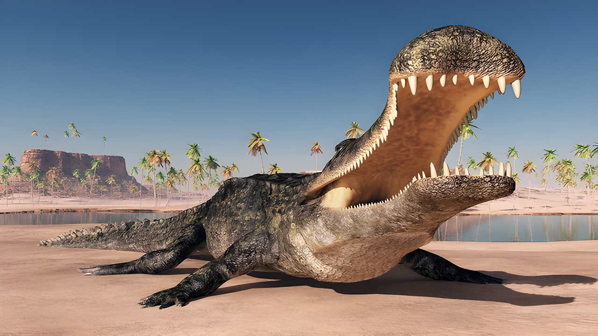
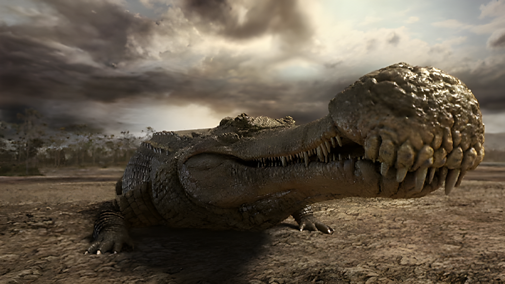
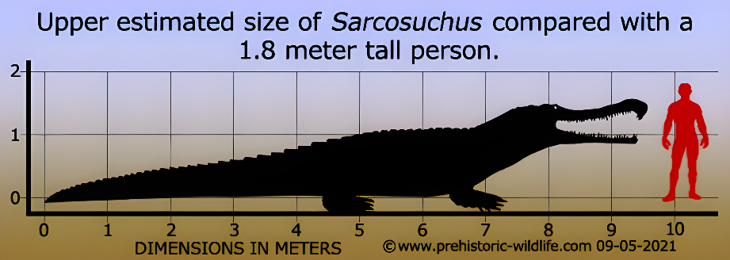
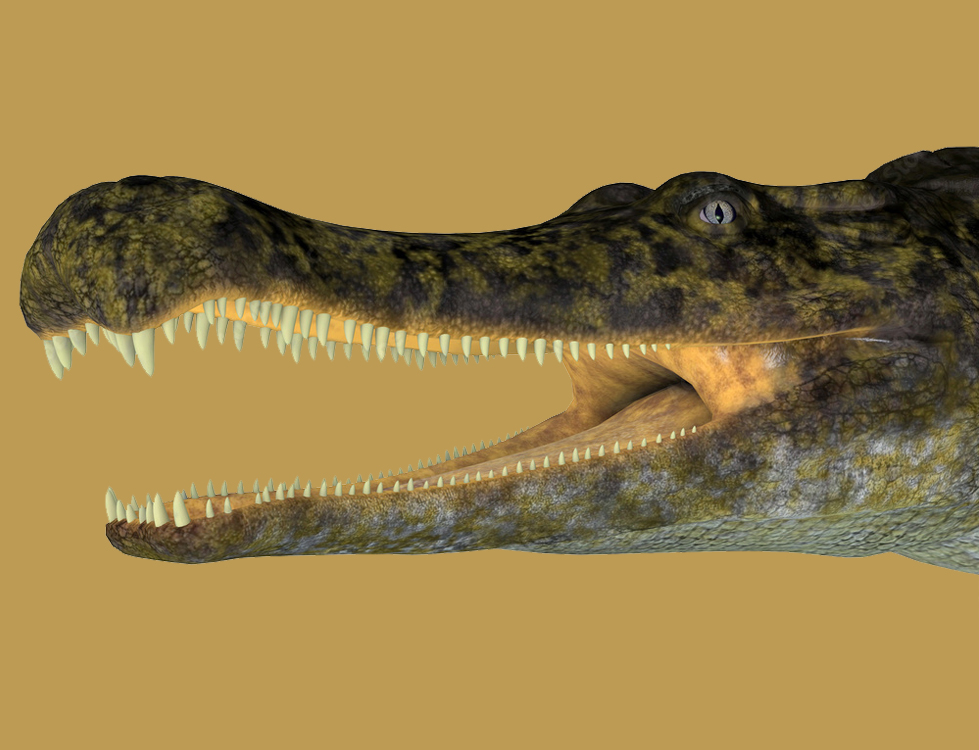
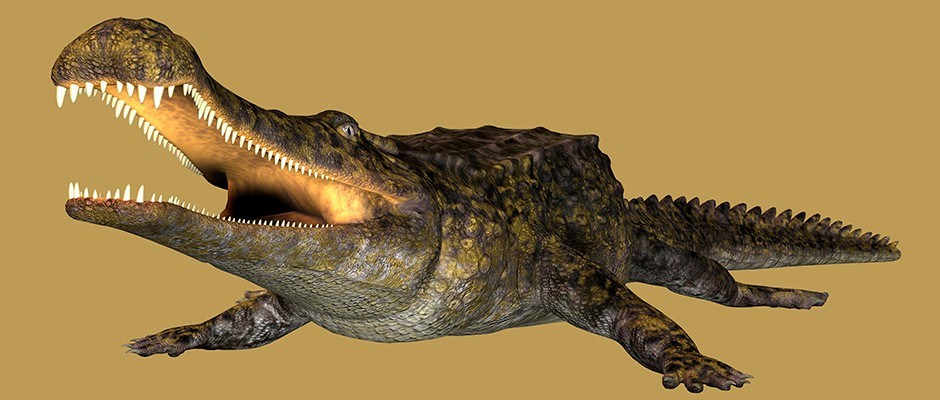
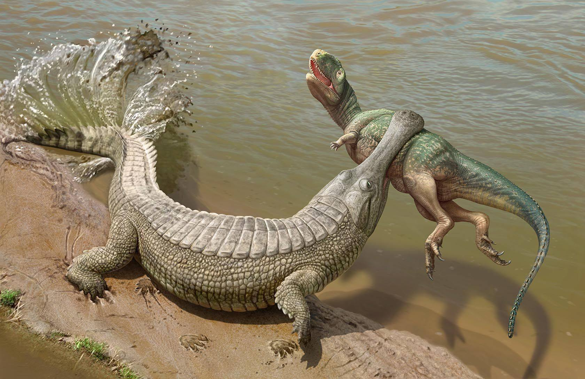
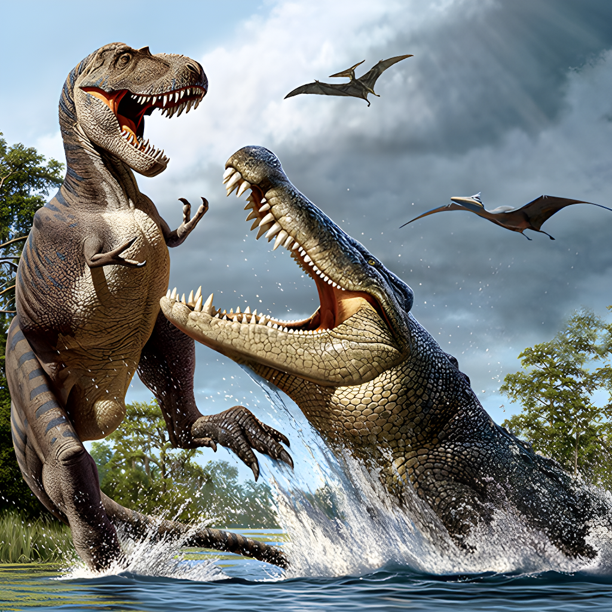
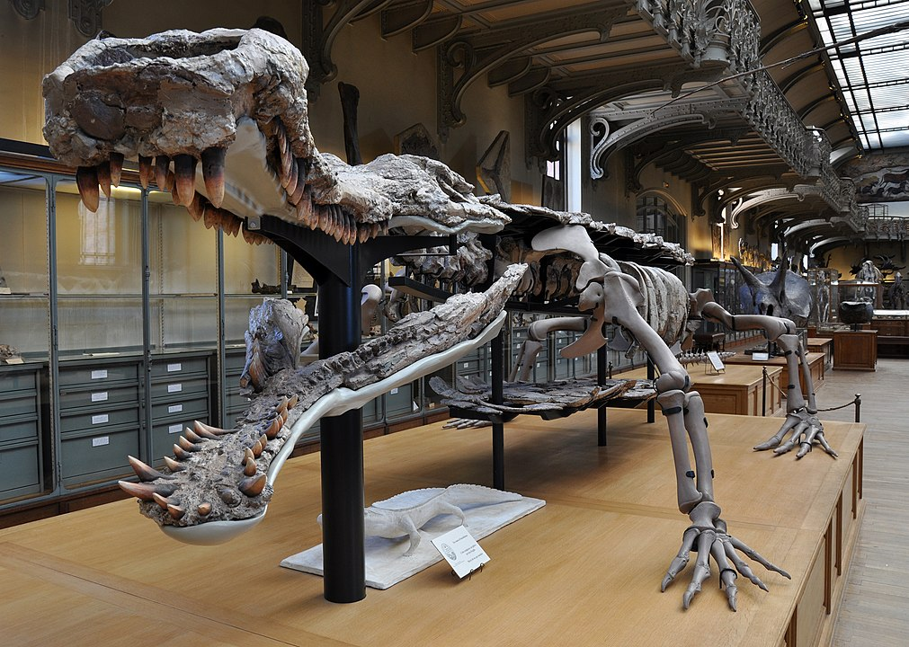

Sarcosuchus
Cá Sấu Khổng Lồ kỷ Phấn trắng
Tổng quan
Kỷ
Cretaceous
Họ
Pholidosauridae
Chi
Sarcosuchus
Dài
12 m
Nặng
8 tấn
Thức ăn

Sarcosuchus là một chi Crocodylomorpha đã tuyệt chủng và là họ hàng xa của cá sấu, sống vào đầu kỷ Creta và là một trong những chi bò sát dạng cá sấu lớn nhất từ tồn tại.
Nguồn: wikipedia.org
Phân bố
Khu vực Bắc Phi và Nam Mỹ
Thông tin thêm về Sarcosuchus
Kỷ nguyên và phân bố
Sarcosuchus là một chi Crocodylomorpha đã tuyệt chủng và là họ hàng xa của cá sấu, sống cách đây khoảng 112 triệu năm. Nó sống vào đầu kỷ Creta trong các hệ thống sông lớn vào thời điểm đó là lục địa chung của Châu Phi và Nam Mỹ, chủ yếu phân bố ở một vùng của sa mạc Sahara ngày nay được gọi là Sa mạc Ténéré. Vào thời điểm đó, khu vực này rất khác so với ngày nay. Theo thông tin địa tầng, sa mạc Sahara của thời kỳ này có khí hậu rất ẩm ướt, với những dòng sông và hồ lớn trên mặt đất.
Tên khoa học
Năm 1966, sau khi nghiên cứu và phân tích kỹ lưỡng những mẫu hóa thạch đã được tìm thấy, hai nhà cổ sinh vật học De Broin và Phillipe Taquet đã đặt tên cho loài cá sấu khổng lồ này là Sarcosuchus - Cá sấu thịt, được lấy từ tiếng Hy Lạp, với "Sarco" có nghĩ là thịt, còn "suchus" nghĩa là cá sấu. Trên các phương tiện truyền thông chính thống, nó được đặt biệt danh là “SuperCroc” - Siêu Cá Sấu hoặc Cá Sấu Khổng Lồ, một cái tên phù hợp khi xem xét kích thước khổng lồ của loài cá sấu này so với loài cá sấu ngày nay.
Kích thước
Sarcosuchus là một trong những loài siêu cá sấu thời tiền sử lớn nhất từ tồn tại. Sau khi phân tích và mô phỏng tỷ lệ hộp sọ với cơ thể theo tỷ lệ của cá sấu Ấn Độ và các loài cá sấu nước mặn, các nhà nghiên cứu thấy rằng với mẫu hóa thạch hộp sọ của cá thể lớn nhất được tìm thấy (dài 1,6 mét) thì chúng sẽ sở hữu chiều dài cơ thể lên tới 11,65 mét và nặng khoảng 8 tấn.
Với kích thước khổng lồ như vậy, loài cá sấu Sarcosuchus phải mất rất nhiều thời gian để có thể phát triển chiều dài cơ thể tới hơn 11 mét, điều này cũng đồng nghĩa với việc loài này có tuổi thọ rất cao. Theo nghiên cứu về bộ xương của loài cá sấu này, khi chúng 40 tuổi thì chiều dài cơ thể của chúng mới chỉ bằng 80% khi so sánh với một con trường thành, ước tính loài Sarcosuchus thực sự đạt kích cỡ cực đại và trưởng thành khi chúng đạt 50 đến 60 tuổi.
Ngoại hình
Sarcosuchus là một loài săn mồi hết sức khủng khiếp và to lớn, chúng có một cái đầu to và cái mõm tương đối mảnh mai chiếm 75% tổng chiều dài của hộp sọ, hình dáng hộp sọ của chúng tương đối giống với loài cá sấu Ấn Độ ngày nay. Có một phần nhô ra (gọi là Bulla) ở đầu trước mõm của cá sấu Sarcosuchus. Phần nhô ra này có khả năng cải thiện khứu giác. Mũi và mắt của loài cá sấu khổng lồ này nằm trên đỉnh đầu, điều này giúp cho chúng không cẩn phải nổi hoàn toàn lê mặt nước để quan sát và thở.
Giống như tất cả các loài cá sấu, Sarcosuchus có lớp da dày và có vảy. Nó có đôi chân ngắn và chiếc đuôi dài cơ bắp mà nó dùng để tự đẩy mình trong nước với tốc độ cao. Vũ khí đáng sợ nhất của loài Sarcosuchus là cái miệng "siêu to khổng lồ" với chi chít những chiếc răng sắc nhọn (có 70 chiếc răng ở hàm trên và 62 chiếc răng ở hàm dưới). Răng của chúng rất dày và có hình nón.
Chế độ ăn và săn mồi
Dựa trên kích thước mõm và bộ răng của Sarcosuchus, các chuyên gia đã đưa ra giả thuyết rằng chế độ ăn của loài cá sấu này tương tự như chế độ ăn của Cá sấu sông Nile. Nó có một chế độ ăn uống đa dạng bao gồm hầu hết mọi thứ mà nó có thể chế ngự và giết chết. Chế độ ăn uống của Sarcosuchus có thể bao gồm những con mồi lớn trên cạn, bao gồm cả những con khủng long có nhiều ở cùng khu vực.
Sarcosuchus có lẽ không thể thực hiện động tác "cuộn tử thần" nổi tiếng như cá sấu ngày nay. Tuy nhiên, nó là một kẻ săn mồi đáng sợ và một kẻ săn mồi phục kích lão luyện. Bằng chứng cho thấy mắt của siêu cá sấu di chuyển lên hoặc xuống. Điều này cho thấy rằng nó có thể đã dành phần lớn thời gian của mình để chìm một phần dưới mặt nước, thỉnh thoảng nhô lên khỏi mặt nước để tóm lấy con mồi đang lấn chiếm và kéo nó xuống nước, sử dung vũ khí là hàm răng có thể cung cấp cho chúng những cú tạp cực mạnh, dễ dàng xuyên thủng da thịt của con mồi.
Khám phá
Các cuộc thám hiểm đến Sahara vào những năm 1940 và 1950 đã mang lại một số loài cá sấu lớn ở nhiều dạng khác nhau trong khu vực. Những khám phá rời rạc này bao gồm các bộ phận của hộp sọ, răng, vảy và đốt sống. Mãi đến năm 1964, hộp sọ gần như hoàn chỉnh đầu tiên mới được tìm thấy ở khu vực phía bắc Niger. Cái đầu được phục hồi được coi là mẫu gốc của chi này. Các nhà khoa học đã xác định nó là Sarcosuchus imperator vào năm 1966.
Vài năm sau, một loài Sarcosuchus mới được tìm thấy ở lưu vực Reconcavo của Brazil. Nó có tên là Sarcosuchus Hartti. Phát hiện này được sử dụng để phân loại lại hai hóa thạch răng bị cô lập được phát hiện từ năm 1867 bởi nhà tự nhiên học người Mỹ Charles Hartt, ban đầu được đặt tên là Goniopholis Hartti. Gần đây hơn, nhà cổ sinh vật học người Mỹ Paul Sereno đã tìm thấy một phần bộ xương, bao gồm một số hộp sọ của Sarcosuchus, trong các trầm tích của Hệ tầng Elrhaz.